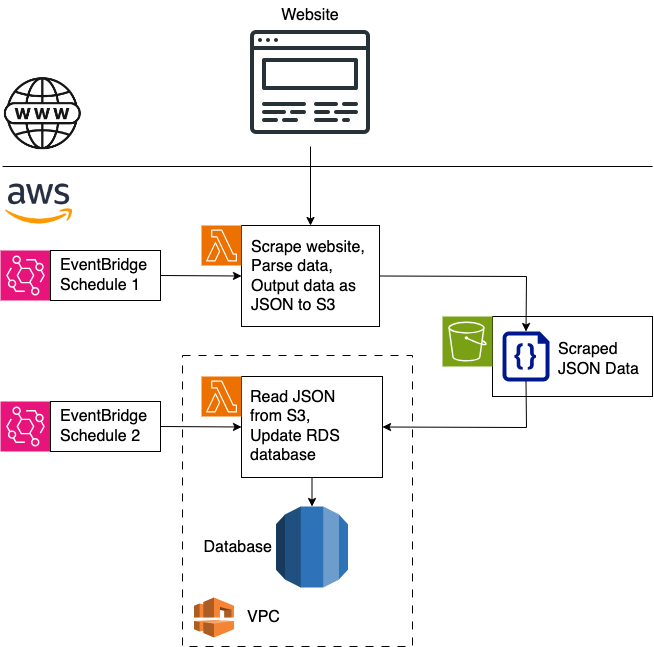

Simple AWS Web Scraper
Introduction
This blog post presents a very simple architecture within AWS for implementing a web scraper that parses some data from a website and stores it in a database.
Architecture
The architecture that can be used for this is as follows:

- Starting from the bottom of this architecture, we have an RDS database that we want to store some scraped data in.
- This poses a small issue because the RDS database resides in private VPC that doesn't have unfettered access to the outside world. This means that we can't have a single Lambda that can both talk to the outside world (to scrape a website) and communicate with RDS because it would need public and private access.
- We get around this issue by having two Lambdas.
- The first Lambda is not in any VPC so it does have unrestricted access to the outside world and so can scrape the website. It then parses any data that we want to store, writing it to S3 as JSON.
- The second Lambda can then be inside the same VPC as the database, read the parsed JSON from S3 and can update RDS (since it's in the VPC).
- We're using S3 as the communication medium between the two Lambdas.
- The execution of the two Lambdas is coordinated by two EventBridge schedules. These can be configured to trigger other AWS services based on a schedule. So we configure their schedules to execute the first Lambda before the second one.